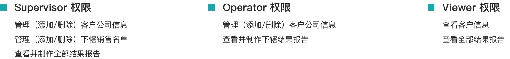
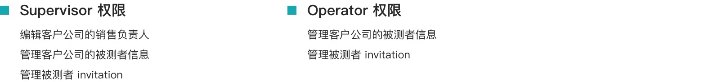
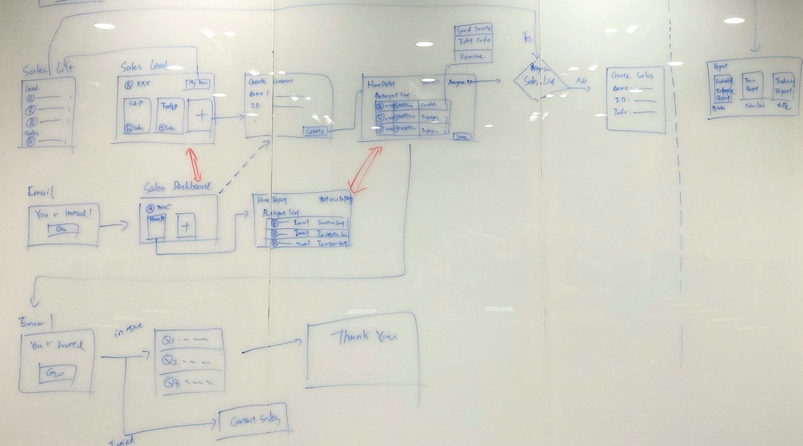
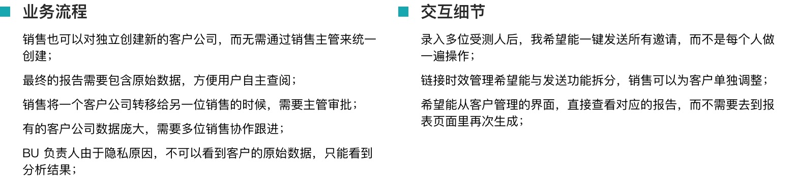

随着 AIOps 的逐步推广，IBM Z 产品研发部门和销售部门计划研发一个为潜在客户公司做运维需求分析的工具。公司的销售通过此工具从客户那里收集客户的意见和信息，分析出客户公司当前的运维能力和与IBM现有产品的潜在合作机会等。
这个项目设计的难点在于不同权限的用户在产品内的流程复杂性，甚至包括销售团队内部的管理关系，BU 内其他业务方的权限管理，客户信息的管理和创建等。所以我们对整体的用户类别进行了初步的统计，并对主要产品功能需求和产品经理一起进行了梳理和确认。
根据一个完整的客户接洽分析周期，我们分析提炼出了三个重点场景，并分别对每个场景的不同用户职能进行了整理归纳；
场景一：问卷筹备管理
这个阶段重点关注 问卷发送前，销售团队需要做的的准备工作内容；
销售团队创建和对应客户分配，例如销售被添加到系统，或被指定为客户的对应负责人等；
客户资料创建流程，例如客户公司账号创建，受测人的信息收集和录入，邀请有效期的管理等；
场景二：问卷完成及邀请管理
这个阶段重点挖掘受测人收到问卷邀请后发生的内容，以及销售如何确保问卷的及时有效回收；
受测人收到并填写问卷流程，例如用户收到邮件后的行为，初次登陆的流程等；
对问卷邀请的管理，例如有效期设定、二次提醒，状态查询等；
场景三：结果分享展示
这个阶段重点关注不同终端用户对于客户结果的分析需求和获取方式；
销售如何获取分析报告，如何分享给客户；
公司业务负责人如何获取公司报告或行业报告等；
管理方的权限定义
因为用户种类的多样，需求和操作流程的复杂，我们决定先从管理方入手（销售主管、销售、业务负责人），从抽象权限的角度对用户的行为进行整理。随后再将客户完成问卷的流程融入进来。
通过对管理方用户需求的分析，我们根据需求面向对象的不同分成两类，一类是平台内部的管理，另一类是面向客户的管理；
平台内部的管理：
面向客户管理：
实际用户流程设计
我们把权限、用户需求和场景整合在一起，重新梳理了一遍用户的使用流程，详细记录每一步不同用户的行为，系统反馈的状态等。同时我们把用户的流程，拉长到了用户从 onboard 开始的起点，包括了非注册用户启动流程。
核心页面纵向提炼
根据不同的用户流程，我们对关键的组件和功能进行了合并，提炼出了核心页面和模块，例如销售专用的个人 Dashboard、客户管理页面、报表管理页面。
测试阶段，我们重点关注设计流程是否符合不同用户与客户够沟通的模式、管理团队的模式等。通过对 10 个技术销售（包括 1 位销售主管）的功能介绍，以及两位销售的重点访谈，基本收到了如下两类反馈：
销售主管被管理员添加到平台；
销售主管登录平台，创建客户信息，并指派对应销售；
销售录入收集到的受测人信息，通过邮件发送邀请；
[问卷完成后] 销售查看客户公司的分析结果；